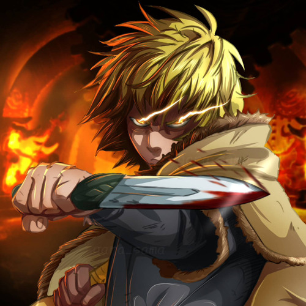

Thorfinn Karl
Thorfinn, the protagonist of "Vinland Saga," begins as a fierce and revenge-driven warrior. Driven by the quest to avenge his father's death, he showcases exceptional combat skills and determination.
About The Warrior
Thorfinn emerges as the central character in "Vinland Saga," an anime that
weaves a rich tapestry of Viking history and human drama.
Initially fueled by a burning desire for revenge, Thorfinn's character is
introduced as a skilled and relentless warrior, driven by the tragic loss of his father.
The exploration of Thorfinn's evolution becomes a thematic cornerstone, transitioning
from a singular pursuit of vengeance to a broader reflection on personal growth and morality.
The anime transcends its initial premise, delving into the complexities of the human experience and the pursuit of peace in a harsh and unforgiving medieval setting.
Against the backdrop of the Viking Age, Thorfinn's journey becomes a captivating odyssey, offering viewers a nuanced portrayal of a character grappling with the intricate layers of his own nature.
The transformation of Thorfinn serves as a focal point, illustrating the multi-dimensional aspects of his personality and the profound impact of the world around him.
For more information, Check out Thorfinn Karl Developed by @ SAMAD.